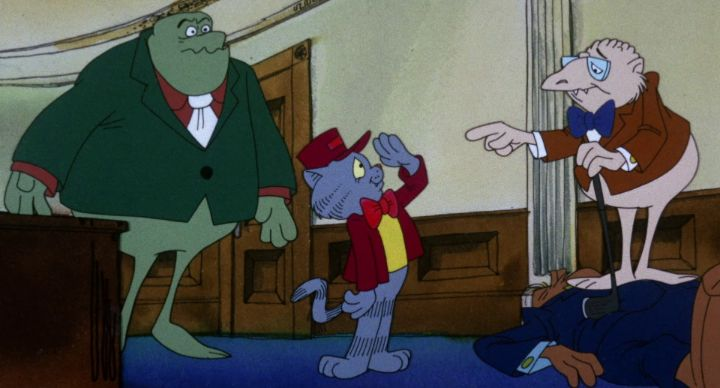

I had meant to see Ralph Bakshi's 1972 X-rated debut "Fritz the Cat" for a long time, and I finally got to when Kino Lorber put the long out-of-print movies on Bluray in North America. Two movies, that is: the original and its sequel, "The Nine Lives of Fritz the Cat." I had never heard of this sequel, and die hard fans would say that's for the best. The first movie has a following from director Ralph Bakshi, who would go on to make several other movies that defined the underground animation scene of the 70's and 80's. But "Nine Lives" was made completely without him (this time directed by Robert Taylor, a workman-like director) and without the involvement of Robert Crumb, the original comic creator. In true studio fashion, the copyright owners wanted a sequel after the sucess of the first movie, and would make it with or without the original visionaries. Of course, to say that "Nine Lives" is significantly worse than "Fritz" requires you to respect and love everything Bakshi has ever made. I respect him as a unique artist, but most of his movies are terrible and repetitive. So while "Nine Lives" is worse in some ways, I feel like it's on par overall, and that both movies are worth watching if you're a fan of the film version of the sex-addicted philosopher cat. In this case, Fritz is no longer a college student, but a married man with a baby. But he's still a stoner without a job, scratching his crotch on the couch like he has a yeast infection, and his fat wife berrates him for not taking responsibility for once (and making fun of his small manhood while she's at it). While quietly listening to his yelling wife and smoking his weed, Fritz daydreams about nine other lives, and we get an psychadelic anthology of sorts, each in different time periods and ficitonal histories, and each ending with Fritz meeting his end (no problem if he dies; cats have nine lives, after all).The anthology format works a little better for the X-rated content. The original felt aimless until its dramatic conclusion, and having shorter stories and vignettes helps keep the viewer's attention for the next profane setting. The stories are varied, and live up to the sex, violence and drug use of the first movie, with additional context for shock value. One story has Fritz meeting a homeless drunk claiming to be God. Another has him serving under Hitler in WWII (while suggesting that Adolf was gay and slept with his oderlies, this time, Fritz). Another has him trying to return a used condom for a refund at a local store. All the while, he complains and laments having to get a job instead of continuing to cash wellfare checks. If there was any question in the first movie that he was smart behind his perversion, this movie clears it: Fritz is a loser through and through.  For the most part, the production and writing isn't too different from Bakshi's movie. The biggest difference is that Bakshi likes to make a point when he displays the crude and dirty culture of today, while "Nine Lives" tends to just show everything for shock and laughs, like an adult Looney Tunes cartoon. That's not a big downgrade, as Bakshi's point is usually just "showing reality to remind you how messed up the world is," which isn't exactly deep, and has been repeated in several of his movies without variation. "Nine Lives" also portrays racism and Black culture in America, but unlike the prior movie, it's done with less subtlety and sympathization, coming across as offensive. For example, one of the biggest segments is a fictional one where New Jersey becomes an indpendent country called "New Africa," where all the Black people are sent to live, while the White politicians in Washington D.C. are worried about how their afluent lives will be affected by the development. It's a surprisingly smart segment, but goes a few steps too far. The animation quality is largely on par with the prior movie, and similar to Bakshi's other films, if just slightly cleaner (and therefore, lacking in "character," for better or for worse). The audio tracks are better mastered and more consistent in volume, making them a technical improvement that's easier to understand and listen to. "The Nine Lives of Fritz the Cat" isn't as important or significant as the prior movie, as it wasn't the first X-rated cartoon in the US, and doesn't have Bakshi's involvement. But purely as a movie compared to a movie, it's a fair follow-up and a good example of the edgy underground animation and comic movement of the era. But do keep in mind that this isn't a movie for everyone: like the first movie, it's crude and vulgar, and slightly more offensive this time. Without Bakshi's (supposed) meaning behind it all, it's increasingly difficult to recommend this type of exploitative movie to anyone who doesn't have a gross sense of humor. At least it's more honest in portraying Fritz and his variations as the loser he really is, not unlike the target audience. Don't do drugs kids, or at least practice moderation.
- "Ani" More reviews can be found at : https://2danicritic.github.io/ Previous review: review_The_Night_Is_Short,_Walk_On_Girl Next review: review_The_Nose_or_Conspiracy_of_Mavericks